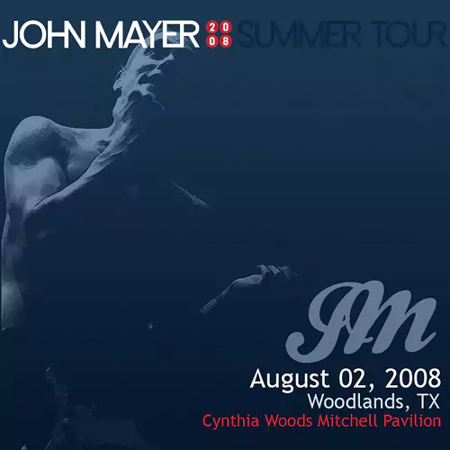

01 July 2024 - 07 July 2024 | Week 1 of Audio Recomendations

Last Train Home - Live at The Forum on 2022-03-16
Slow dancing in a burning room - Live at 3Arena on 2024-03-29
Queen of California - Tuscaloosa Amphitheater on 2013-04-25
